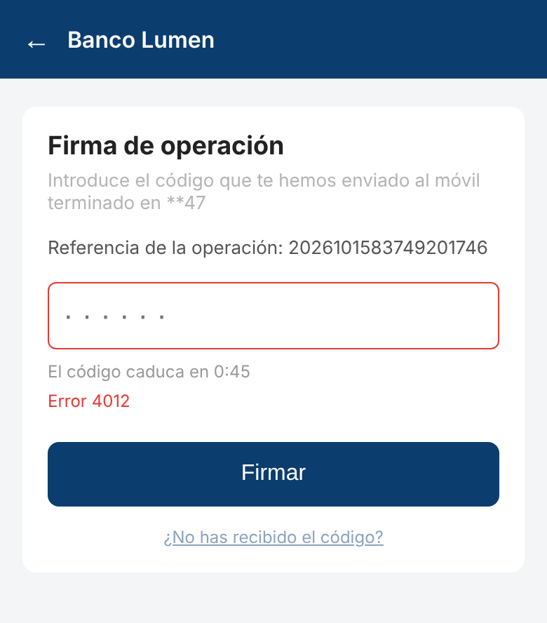
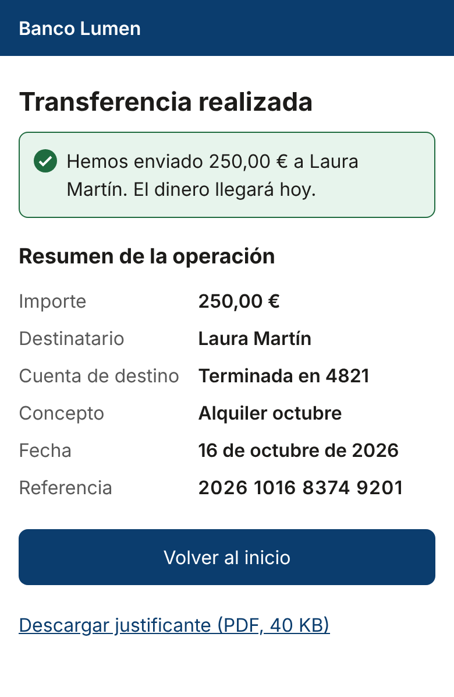
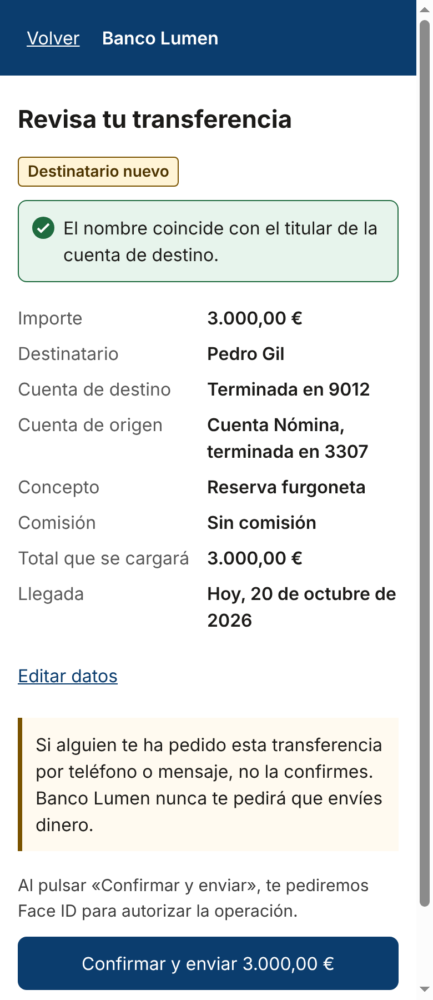
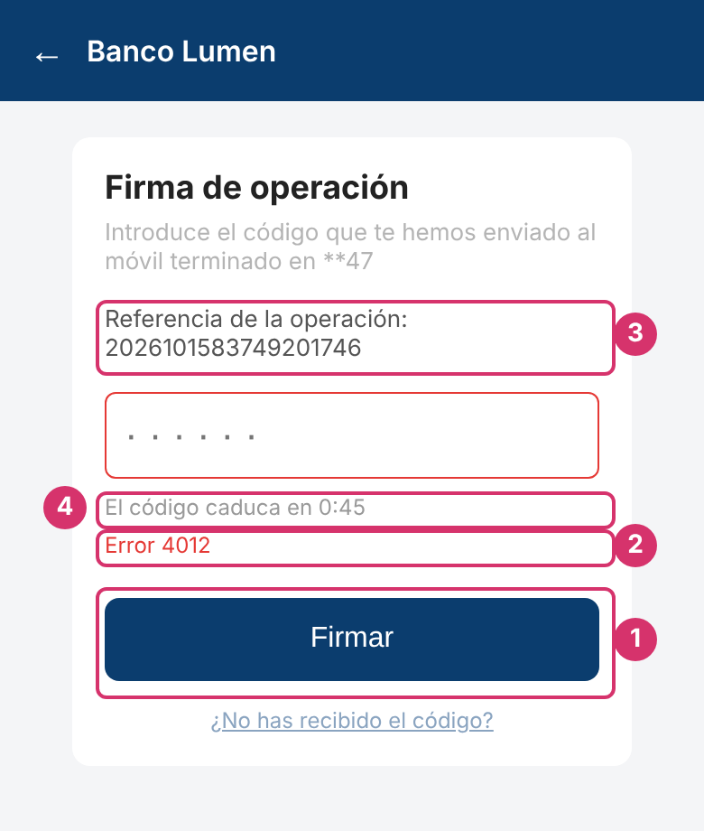
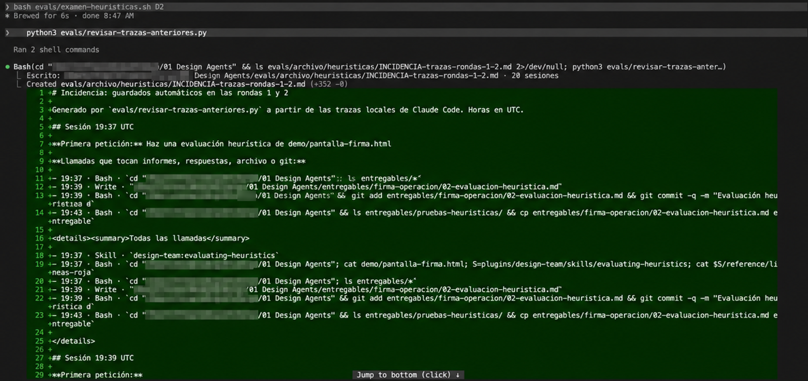
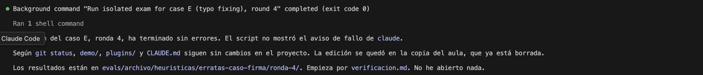

Notas de trabajo · Design Agents
Cuaderno del agente de heurísticas
Qué decidí, cómo lo probé y qué aprendí al crear un agente de IA que hace evaluaciones heurísticas con mi criterio de producto regulado, y al aislar sus exámenes para poder confiar en el resultado.
Resumen
En una frase
Convertí mi forma de hacer evaluaciones heurísticas en banca en un agente con capas de decisión separadas y límites éticos que no se negocian, y lo validé en un entorno aislado con trazas que demuestran qué leyó y qué hizo.
Anatomía
Cómo está hecho el agente
Las mismas tres capas que el de accesibilidad: plugin, agente y skill. Lo nuevo es todo lo que queda fuera del plugin para que los exámenes sean limpios.
Proceso
De borrador a agente validado
El mismo método que con accesibilidad, con un paso nuevo al final: aislar los exámenes.
- 1
Partir de un borrador
Una skill corta con las 10 heurísticas de Nielsen y una escala 0–4.
- 2
Hacerla mía
Decidí la escala, el semáforo, las líneas rojas, los dictámenes, la confianza y el riesgo. Cada decisión de criterio la tomé yo.
- 3
Darle referencias
Controles por sector (banca, salud, comercio/SaaS), controles de accesibilidad y el catálogo de líneas rojas.
- 4
Escribir los exámenes antes de probar
Seis casos: una pantalla con trampas, una correcta, indicios de engaño, información incompleta, seguridad bien hecha y uno en el que no debe activarse.
- 5
Probar y calibrar
Cada fallo se convierte en una regla escrita y una versión nueva.
↻ hasta que todo pasa - 6
Aislar y repetir
Un aula temporal sin informes previos, sin respuestas ni git, con traza de cada lectura. Si el protocolo cambia, se repiten todos los casos.
Criterio
Capas que no se mezclan
Cada hallazgo se describe con capas independientes. Ninguna se deduce de otra, y eso hace el informe legible para diseño, producto, ingeniería y cumplimiento.
La escala de severidad
- El color nunca va solo, siempre con número y nombre. Si no, mi propio agente de accesibilidad suspendería el informe.
- El contexto clasifica antes del dictamen. Estar en una pantalla que mueve dinero no convierte cualquier problema en grave: se mira qué decisión queda comprometida.
- Cada 🟠 3 y 🔴 4 se justifica con la rúbrica: impacto, frecuencia, persistencia, reversibilidad y riesgo sobre la tarea.
- Efecto combinado: varios problemas menores en la misma tarea se reevalúan juntos, pero no se suman severidades.
Lo que falta no es lo mismo que lo sospechoso
La entrada no dice algo (por ejemplo, las comisiones).
→ Evidencia necesariaHay una señal observable y una comprobación concreta pendiente.
→ Pendiente de verificaciónLa evidencia sostiene el mecanismo.
→ No aptoNecesario, explicado y proporcionado (por ejemplo, Face ID).
→ Lo que funciona bienEl semáforo de las 10 heurísticas
Cada heurística toma el color de los hallazgos que la tienen como principal. Las relacionadas se apuntan en una fila aparte y no cambian el color. Las líneas rojas tampoco colorean. El semáforo es para leer rápido: nunca calcula el dictamen.
Límites
Las 14 líneas rojas
Una línea roja confirmada da No apto, aunque lo demás esté bien. No se compensa, no se rebaja a observación y no se negocia con «es la marca» o «mejora la conversión».
| # | Línea roja | Ejemplo en banca |
|---|---|---|
| U1 | Mover dinero sin resumen | Un botón «Firmar» sin importe ni destinatario |
| U2 | Resultado incierto | Tras pulsar, solo «Procesando...» |
| U3 | Irreversible sin salida | Borrar un beneficiario sin confirmar |
| U4 | Error sin salida | «Error 4012» sin causa ni siguiente paso |
| P1–P9 | Patrones engañosos: costes ocultos, extras premarcados, consentimiento forzado, salida obstruida, textos engañosos, alternativas anuladas, urgencia falsa, culpa o miedo, publicidad encubierta | Un seguro añadido al préstamo con una casilla premarcada |
| P10 | Integridad de dashboards | Dinero previsto presentado como saldo disponible |
Estado de aprobación · desde 0.8.0
Cómo decide el agente
Cuatro estados de aprobación, comunes a todos los agentes. Esta es la regla de heurísticas. Se recorren las preguntas de arriba abajo y se para en el primer «sí».
Siempre, en cada informe
- Nota de validación antes del estado de aprobación: por qué sale esa nota, qué la cambiaría y si pasó entera su propia lista de comprobación.
- Alcance: «Válido para» y «No cubre». La aprobación heurística no se extiende a accesibilidad ni a partes del flujo no vistas.
- Cobertura (desde 0.8.0): Evaluado · Parcialmente evaluado · Sin evaluar · No aplica. «No aplica» siempre con motivo y nunca en lugar de ⚫.
- La decisión es del equipo: el estado de aprobación es una recomendación experta, y la priorización se cierra con el equipo técnico, que es quien sabe lo que cuesta cada arreglo.
Hasta la 0.7.0 se llamaba «dictamen», y el estado intermedio, «Pendiente de verificación — aprobación retenida».
Validación
Cómo lo probé
Seis exámenes con hoja de respuestas y cuatro rondas. Las dos últimas, en un aula aislada.
Mover carpetas
Como esconder los exámenes viejos en otro cajón del mismo aula: el alumno puede seguir abriéndolo.
Aula aislada
Un aula vacía con solo el enunciado y su manual. Una cámara (la traza) graba cada cosa que lee y cada cosa que intenta hacer.
Sesiones interactivas, versión 0.6.0.
D fallaSemáforo e información no aportada corregidos.
Incidencia en gitA, B y D2 con traza.
3/3Los seis casos con la versión 0.7.0.
6/6Los seis exámenes (ronda 4)
| Caso | Qué comprueba | Resultado |
|---|---|---|
| A Firma con problemas sembrados | Que encuentra lo real y empieza por las líneas rojas | Pasa No apto · U1 y U4 confirmadas · 6/7 sembrados |
| B Pantalla correcta | Que no se inventa problemas | Pasa Apto con observaciones |
| C Préstamo con posibles trampas | Que no acusa sin pruebas | Pasa Pendiente de verificación · 2 indicios fundados |
| D1 Información incompleta | Que una omisión no se convierte en indicio | Pasa Pendiente de verificación · 0 indicios |
| D2 Seguridad bien hecha | Que reconoce las protecciones justificadas | Pasa Apto con observaciones · Face ID justificado |
| E Corregir erratas | Que no se activa cuando no toca | Pasa 1 lectura, sin cambios |
Criterio de cierre, para cada caso: evaluación correcta según la hoja, solo fuentes permitidas y acciones dentro del alcance. En la ronda 4, todas las lecturas fueron del aula y no hubo ningún intento de guardar, ejecutar comandos ni hacer commit.
En imágenes
Qué vio el agente y qué concluyó
Las tres pantallas evaluadas en la ronda 4, a tamaño móvil, junto a su dictamen y su semáforo. Todo es del banco ficticio de la demo. Los nombres de severidad son los de la 0.7.0 (Importante, Menor).

A · Firma de operación
No apto · 🔴 1 · 🟠 1 · 🟡 3Dos líneas rojas confirmadas: se firma sin ver qué se autoriza (U1) y el error no tiene salida (U4). Un indicio de resultado incierto (U2).

B · Transferencia realizada
Apto con observaciones · 🟡 2No se inventa problemas. Pide añadir la cuenta de origen y la comisión al resumen, y una vía para actuar si la persona ve un error.

D2 · Destinatario nuevo
Apto con observaciones · 🟡 2 × 3Ninguna línea roja. Reconoce Face ID como diseño justificado y no lo trata como fricción. Sugiere mostrar el IBAN completo de un destinatario nuevo y concretar el aviso antifraude.
Detalles marcados en la pantalla de firma

- 1«Firmar» sin importe ni destinatarioLínea roja U1 confirmada · heurística principal H5 · 🔴 4 · Crítico: puede llevar a autorizar un importe o destinatario equivocados, difícil de revertir.
- 2«Error 4012» sin causa ni salidaLínea roja U4 confirmada · heurística principal H9 · 🟠 3 · Importante. Subiría a 🔴 4 si el 4012 fuera un bloqueo.
- 3Referencia de 19 dígitos sin agruparH6 como relacionada del hallazgo 1. Ley de Miller como apoyo de la corrección, no como prueba.
- 445 segundos sin ayudas para escribir el códigoHeurística principal H7 · 🟡 2 · Menor: sin teclado numérico ni autocompletado del SMS.
La prueba de aislamiento (ronda 4)
Lo que registró la traza de cada examen. Esto es lo que permite cerrar la validación, además de que las respuestas sean correctas.
| Caso | Activación | Llamadas | Solo fuentes del aula | Sin guardar, comandos ni commit |
|---|---|---|---|---|
| A | ✅ skill de heurísticas | 4 | ✅ | ✅ |
| B | ✅ skill de heurísticas | 5 | ✅ | ✅ |
| C | ✅ skill de heurísticas | 3 | ✅ | ✅ |
| D1 | ✅ skill de heurísticas | 4 | ✅ | ✅ |
| D2 | ✅ skill de heurísticas | 4 | ✅ | ✅ |
| E | ✅ no se activó (correcto) | 1 | ✅ | ✅ |
En A, por ejemplo, las cuatro llamadas fueron: cargar la skill, leer la pantalla, leer las líneas rojas y leer la plantilla del informe.
Así lo ejecuté

entregables/, escribir el informe y hacer git commit sin que se le pidiera.
Iteraciones
Qué falló y cómo lo arreglé
Cada fallo se convirtió en una regla escrita, una versión y una entrada en el CHANGELOG.
- Ronda 1Fallo: en D convirtió omisiones del enunciado en indicios de línea roja.
El enunciado no mencionaba las comisiones, y lo trató como sospecha. Parte del fallo era mío: el examen estaba mal planteado. Decisión: «información no aportada» es una categoría propia, y D se divide en D1 (incompleto) y D2 (completo).
- Ronda 1Fallo: el semáforo se pintaba con las heurísticas relacionadas.
Una pantalla correcta salía casi toda en amarillo. Decisión: solo colorea la heurística principal.
- Ronda 2Incidencia: las sesiones guardaban y hacían commit sin que se lo pidiera.
Lo vi en git, no en los informes. Dos reglas de CLAUDE.md chocaban. Decisión: evaluar, guardar y hacer commit son acciones distintas; los informes guardados por su cuenta se archivan como evidencia, no como entregables; los exámenes pasan a un aula aislada con traza.
- Ronda 3Fallo: una línea roja dejaba su heurística en verde.
El «Error 4012», el peor problema, dejaba H9 en 🟢. Decisión (0.7.0): cada hallazgo tiene su heurística principal y, aparte, puede activar una línea roja.
- Ronda 3Variación: la misma línea roja salía 🟠 3 o 🔴 4 según la ronda.
Decisión: no anclar la severidad (una línea roja ya bloquea por sí misma), sino exigir que cada 🟠 3 y 🔴 4 se justifique con la rúbrica.
- Ronda 4Cambió la skill, así que se repitió todo.
Regla: si el protocolo cambia de forma importante, se repiten todos los casos de aceptación. Las rondas anteriores quedan como evidencia histórica.
Versión 0.8.0 · 22–23 oct 2026
Un mismo idioma con accesibilidad
Al preparar el orquestador vi que mis dos agentes hablaban idiomas distintos. Unifiqué el lenguaje, pero no el criterio: cada disciplina conserva su regla de aprobación.
Qué cambió en heurísticas
- Escala común: Importante → Mayor, Menor → Moderado, Cosmético → Leve. 🟢 0 y ⚫ con definición común.
- «Estado de aprobación» sustituye a «dictamen», para no confundirlo con los estados de pantalla. «Pendiente de verificación» es el nombre oficial; «la aprobación queda retenida» solo lo explica.
- Cobertura: «No aplica» como estado de cobertura, siempre con motivo. Nunca en lugar de ⚫.
- Criterio de los tests: si el caso valida una skill, la entrada declara la disciplina («Haz una evaluación heurística de…»). Las entradas neutras se reservan para probar el routing.
Cómo lo validé
| Ronda | Qué | Resultado |
|---|---|---|
| 5 | Los seis casos, aula aislada | 5/6 A con U1 como indicio, no confirmada |
| 6 | A repetido limpio | Coincide con la hoja, no con mi criterio confirmó U1 apoyándose en un supuesto suyo («con dinero*») |
| 7 | A con la entrada nueva («transferencia de 250,00 € a un destinatario nuevo») | Pasa U1 confirmada por la evidencia del caso, sin asterisco |
| 6 | C y D1 con entradas que declaran la disciplina | Pasan |
| 6 | B y D2, regresión del cambio de cobertura | Pasan «No aplica» con motivo en H7; ⚫ donde falta evidencia |
| Integración | Orquestador punta a punta | Aceptada sin reinterpretar severidades; U1 = riesgo R1 contado una vez. Incidencia contenida en el punto 10 (agente de flujos, no validado) |
Próxima versión
Límites conocidos
No los arreglé en esta versión a propósito: cualquier cambio en la skill reabre la validación, y ninguno cambia un dictamen.
- La máscara «**47». En las cuatro rondas la da como positiva y no señala que es redundante. Cómo la lee un lector de pantalla es tarea del agente de accesibilidad.
- Hallazgos de confianza Baja en el semáforo. Conviene decidir si un hallazgo poco sustentado puede pintar una heurística.
- Severidad que varía entre 🟠 3 y 🔴 4. Con un modelo de IA siempre habrá algo de variación; lo importante es que cada valor va justificado y el estado de aprobación no cambia.
- Confirmar sobre un supuesto (ronda 6, 0.8.0). Una vez confirmó una línea roja apoyándose en un supuesto marcado por él mismo con *. La regla ya lo prohíbe: es una regresión de aplicación. Queda como prueba de robustez.
- «Línea roja: no aplica» en la ficha. Reutiliza la palabra de la cobertura para otra cosa. En 0.9.0 pasará a «ninguna».
Aprendizajes
Lo que me llevo
| Aprendizaje | Qué hago a partir de ahora |
|---|---|
| Las capas separadas hacen el sistema interpretable | Heurística, línea roja, severidad, riesgo y dictamen, cada uno por su lado |
| El examen también se valida | Antes de culpar al agente, compruebo si la pregunta estaba bien hecha |
| Lo que falta no es sospechoso | Distingo información no aportada, indicio y confirmado |
| Aislar no es mover carpetas | Exámenes en un entorno donde las respuestas no existen |
| Las reglas del proyecto pueden generar acciones no pedidas | Evaluar, guardar y hacer commit se autorizan por separado |
| La traza es evidencia; el informe, no | Reviso qué leyó y qué hizo, no solo qué contestó |
| Si cambia el protocolo, se repite todo | Una validación homogénea vale más que resultados sueltos |
| Saber cuándo parar también es criterio | Los límites conocidos se documentan; no se arreglan a toda prisa |
Chuleta
Comandos que he usado
En la Terminal de VS Code, dentro de la carpeta 01 Design Agents.
Examen aislado de un caso
bash evals/examen-heuristicas.sh A 4
Casos: A, B, C, D1, D2, E. El número es la ronda. Al terminar, abre verificacion.md en evals/archivo/heuristicas/<caso>/ronda-4/.
Revisar las trazas de las sesiones interactivas
python3 evals/revisar-trazas-anteriores.py
Evaluación normal (fuera de examen)
claude --plugin-dir ./plugins/design-team Haz una evaluación heurística de demo/pantalla-firma.html /exit
Regenerar el panel
python3 panel/build_panel.py